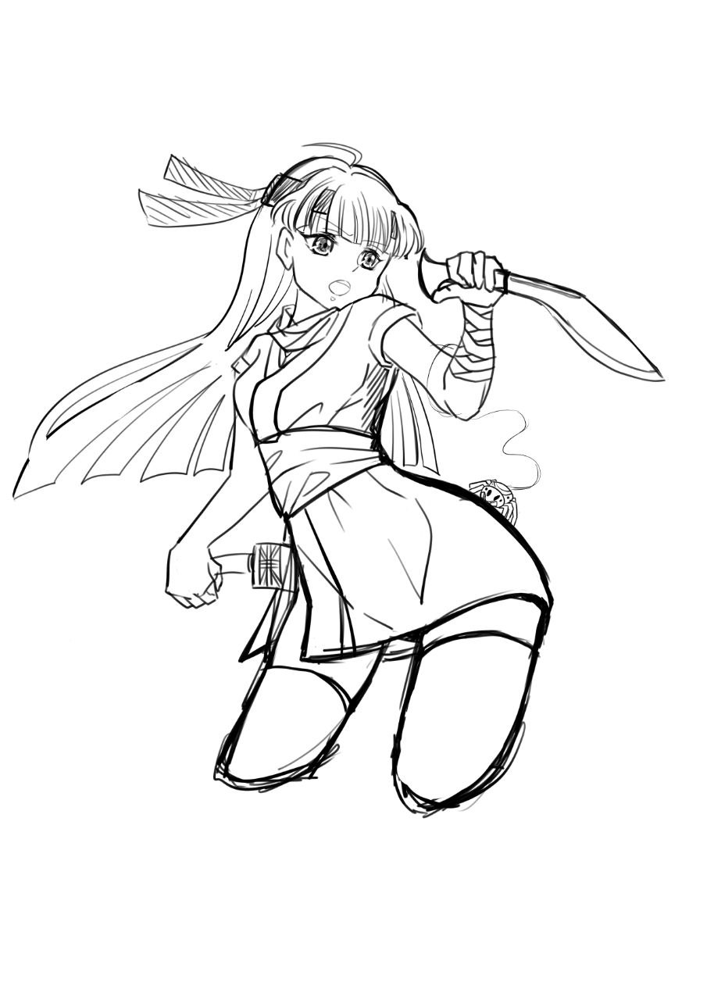

| 角色卡 - Medina |
| 名稱 | Medina |
| 種族 性別 | 女性 人族 |
| 年齡 | 33 |
| 身型 | 身高163 體重52kg |
| 職業 | 擅長醫術和廚藝，刀工熟練的輔助型隊友 |
| 說話方式 | 反應沒有很快，講話比較輕聲細語 |
| 口頭禪 | (無) |
| 個性 | 個性稍微容易害羞怕生，但是會積極面對工作 |
| 信念 | 一個都不能死 |
| 開場時的缺憾 | 不想要再看到隊友死亡了 |
| 故事中的目標 | 人類一方負責蒐集資料，似乎有在執行特殊任務 (表面上是廚師和醫生，實際上對人體解剖很熟，也經常接暗殺任務) |
| 側寫 | 有著現代化知識的忍者 |
| 簡史 | 幼年好友死亡，意識到隊伍中要有能治療的輔助型隊友 會使用祈禱治療，完全是輔助型的隊友。 武器是雙kukri knife，便於野外生活和料理 有一隻蜘蛛寵物當朋友 |
| 原型參考 | 發想 - 真の仲間 – ティセ・ガーランド |
| 形象概念 | 長髮 服裝接近忍者但是有大量迷彩 全身的裝備主要是輕裝為主，方便快速移動 配戴項鍊，由於是要潛行，所以是深色不反光的材質十字架  繪師：minu |
 PosetMage
PosetMage